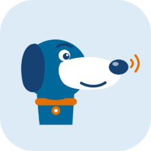

Even kijken of er vandaag al een crawl is gestart…
| Woord | Zin | Pagina | |
|---|---|---|---|
| Bezig met laden… | |||
Woorden met een hoofdletter middenin een zin: plaatsen, organisaties en anderstalige bronnen. Onder de naam staat een oordeel uit GeoNames: bekende plaatsnaam, of lijkt op een bekende plaats. Geen oordeel betekent dat de naam er niet in staat.
Deze crawl heeft nog geen oordeel over de plaatsnamen: hij is gedraaid voordat die check bestond, of de lijst van GeoNames kon niet worden opgehaald. Start een nieuwe crawl om het oordeel erbij te krijgen.
| Naam | Zin | Pagina | |
|---|---|---|---|
| Bezig met laden… | |||
| Woord | Soort | |
|---|---|---|
| Bezig met laden… | ||